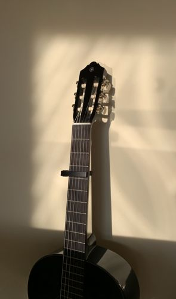

Passions
Équilibre, discipline et esprit d'équipe
Ce qui m'apprend aussi à travailler.
GuitareFootballJeux vidéo
Mes passions

Guitare · 7 ans
Discipline et rigueur : progresser demande de la régularité.
Football · 10+ ans
Esprit d'équipe et adaptation : savoir s'ajuster vite à ses coéquipiers et au rythme du jeu.
Jeux vidéo
Prise de décision rapide et logique système : comprendre des règles, optimiser, anticiper.